Polarization Ray Tracing through Interfaces
In Jones calculus the reflection and refraction at dielectric, metal and multilayer coated interfaces are described in terms of {s,p} components. The polarization ray tracing matrix for a refraction (transmission) and reflection can be obtained from the corresponding Jones matrix (Jt for transmission and Jr for reflection).

Where the 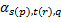 are the amplitude transmission (reflection) coefficients for s or p - components of the polarized field. For single plane interfaces, the coefficients can be calculated from the Fresnel’s equations and for layered interfaces matrix method for stratified media, which leads to the general form of Fresnel’s equations can be applied [9][10]. In the following section the general method of field propagation through stratified media is discussed first followed by brief summary of special case of single plane interface.
Reflection-Transmission Problem for General Layer System
For problems with translational invariance in at least one direction, (like in homogenous infinite media, layers or interfaces), an electric field can be decomposed to two independent components. The field component which is perpendicular to the plane of propagation is called the transverse electric (TE) component and the other one which is parallel to the plane of propagation is called the transverse magnetic (TM) components.
The transmission and reflection coefficients of a multi-layer system shown in the following figure for each component (TE and TM) can be compute independently and are given in the following section.
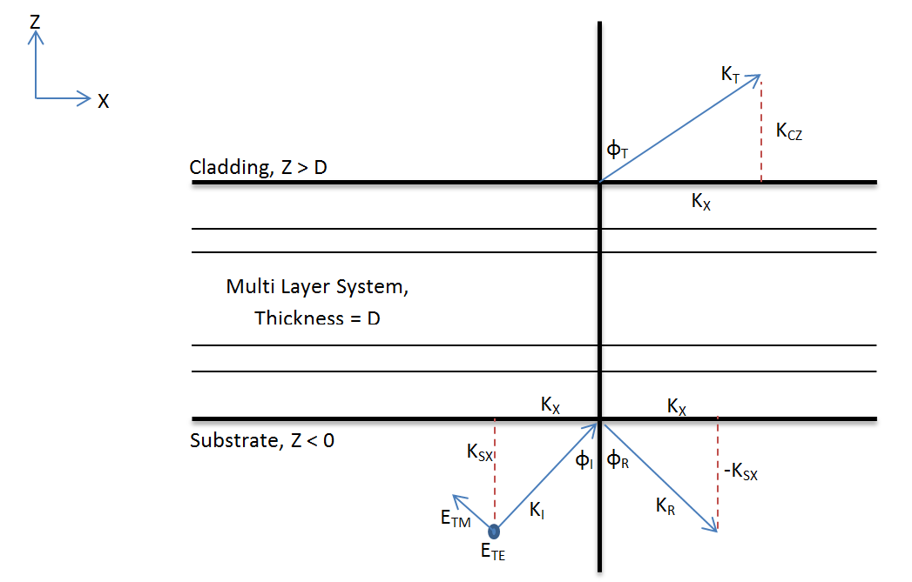
As field is propagating in x-z pane, the wave vector has only two components kX and kZ, tangential and normal to the interface respectively. The tangential component of the wave vector is conserved throughout the entire structure. The total length of the wave vector on each layer is given by the dispersion relation for dispersive, isotropic, homogeneous media. As a consequence, the normal component (kZ) varies and depends on the electric permittivity of each layer.
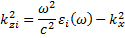
In substrate and cladding the wave vectors can be related to the refractive indices, incident angle and transmitted angle by the following relations:
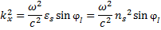
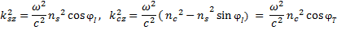
To compute the transmission and reflection coefficients of a layered system, a matrix method for fields in layer system can be applied. For the method the system is represented by a transfer matrix. The transfer matrix for a single layer can be computed from its thickness and permittivity, using continuity of transverse component of electric field and wave vectors at the boundary. For multilayer system, the transfer matrix is the product of the transfer matrices of each layers of the system in reverse order.
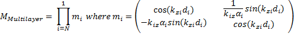
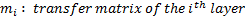

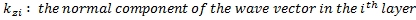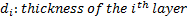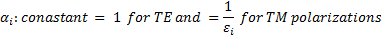
Once the transfer matrix for a multilayer system is determined, the coefficients of transmission and reflection can be obtained using the following relations. Only the final result is presented here.
Reflection Coefficient
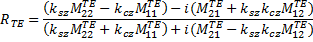
Transmission Coefficient
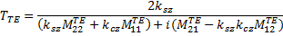
Reflection Coefficient
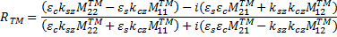
Transmission Coefficient
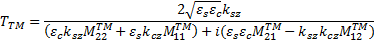
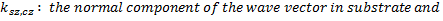
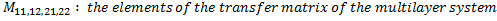
The coefficients computed above describe the relation between the complex amplitudes of incident, reflected and transmitted plane waves. They are called generalized Fresnel’s coefficients.
But for physical reasons, it is common to consider the portion of reflected and transmitted energy fluxes instead of the complex amplitudes. Energy flux is defined by the normal component of the Poynting vectors sz.
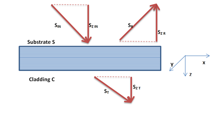
The coefficients relating the incident energy flux with the reflected and transmitted energy fluxes are called the reflectance (r) and transmittance (t) of the system. They can be related to the Fresnel’s coefficients as flows:
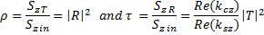
In addition to reflection and transmission, part of incident energy will also be absorbed in the multilayer structure. Since the energy should be conserved, the equation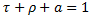
is valid for both TM and TE polarizations where ‘a’ is absorption coefficient .
The matrix method can be used for general case of multi-layer system such as multi-layer coatings. And for bare uncoated glass the multilayer system becomes only a single interface and the general matrix methods simplifies to set of Fresnel’s equations for single interface .
Created with the Personal Edition of HelpNDoc: Full-featured Help generator